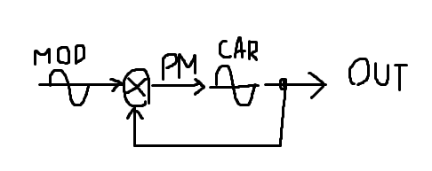

Recently i've been working on a hybrid synthesis method (that's based on pm and am synthesis)
To keep things short, an "operator" is composed of two sine oscillators, the carrier and the modulator.
Instead of using the modulator osc to directly pm the carrier, i multiply it by the previous operator output.

With this topology you can produce both a square wave and a saw wave (well, sort of):
square wave
saw wave
You can hear it implemented in my sptnk/osc/multi object, that morphs between square and saw.
What's interesting is that you can easily bandlimit the output by just tweaking parameters. The s-rate code is really light (like ~300 cycles per object) and sounds quite warm to me.
The only downside is that the output is not really bright as a traditional blit oscillator, and the way i implemented produces some instabilities with intermediate shapes.
I tried to generalize the topology with this formula: (y[t] is the current output and y[t-1] is the previous output)
y[t] = sin(p + F*y[t-1] + sin(p*C+D)*(A*y[t-1] + B))(this way i can implement both straight phase modulation and self phase modulation (other than the hybrid modulation method)
p is the phase of the carrier oscillator
The phase of the modulator osc is given by p*C +D (that allows me to have a consistent phase relationship between mod and carrier)
A, B and F are modulation indices that let me mix (in this order order) the amplitude modulated feedback, the modulator and the straight feedback.
My plan was to find coefficients to fake several waveforms (for example pulse width modulation) and make an ultralight bass oscillator, just wanted to share these ideas with the community
 )):
)):

 )
) 

{kind=link}
{kind=link}
{kind=link}
{kind=link}
{kind=link}